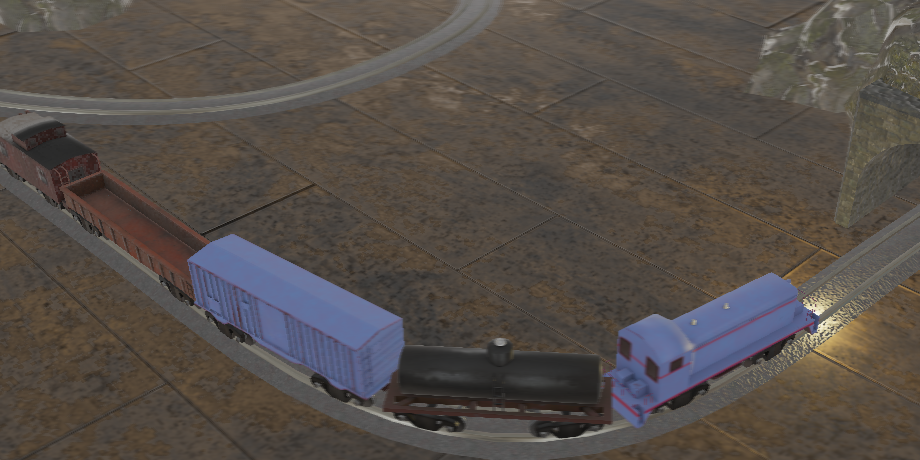

Trains Game
 trainsga.meTrains game is a web toy for making trains go. You can make them go left, or right, and also through a tunnel.
Trains game is a web toy for making trains go. You can make them go left, or right, and also through a tunnel.
Picramp is an image hosting website specifically designed for a small community.
Wildflowersbot is an art bot that generates colorful, healing landscapes every hour.
LSystembot is an art bot that unfolds fractal-like instructions into complex patterns.
Resistance is a tech demo remake of The Resistance board game. It features cryptographically secure peer-to-peer multiplayer.